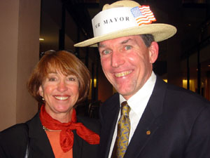

 During my years of Public Service in Mountain View, I have been a vocal advocate of affordable housing and policies that will help ensure that Mountain View is a place where everyday people can afford to live. I have worked to balance growth so that we do not have an ever increasing number of people working here without the housing and transportation systems so necessary to help keep our roads from becoming gridlocked and our atmosphere full of carbon. I pursued a review of the city's transportation policies and worked to find "win-win" solutions to the issues that face our city.
I supported the following:
AFFORDABLE HOUSING
-
Adopting a Below Market Rate Housing Program
-
Implementing a Housing Impact Fee
-
Developing the Efficiency Studio Apartment project and Low Income Family Project
-
Contributing to the County Housing Trust Fund
-
Authorizing a downtown affordable housing project for families
RECREATION
-
Creating a Skateboard Park
-
Opening our first Dog Park
-
Approving construction of Stevens Creek Trail to El Camino and across Highway 85
-
Completing the Shoreline Golf Link improvements
-
Authorizing the newest neighborhood parks
-
Championed the Cuesta Park Annex planning process
YOUTH
-
Creation of the Youth Advisory Groups
-
Hiring of a Youth Resources Manager
-
Budgeting additional funds for youth programs
FISCAL RESPONSIBILTY
-
Agreed to stable, structurally sound labor group contracts
-
Exercised fiscal foresight
-
Paid down $5 million in debt
-
Restructured loans at lower interest
-
Approved new long-term leases for Google lease sites
-
Adopted balanced budgets without relying on reserves
-
Authorized ground breaking contracts preventing runaway retiree health care costs
QUALITY OF LIFE
-
Implementing a Wood Smoke Ordinance
-
Design and construction of numerous neighborhood parks
-
Completing Pioneer Park Renovation
-
Adopted a Monster Home Ordinance
-
Continued Downtown revitalization
-
Approved increased downtown housing
-
Adopted a balanced growth "housing impact fee"
-
Created Burrowing Owl preservation habitat
INFRASTRUCTURE
-
Approved two new water storage reservoirs in collaboration with the School District
-
Construction of the new Fire Station # 2 & 5
-
Restoration of the Adobe Building
-
Approved the reclaimed water pipeline
-
Finished the El Camino Median Beautification project
-
Construction of the new downtown parking garage
-
Development of the new Senior Center
-
Creation of the Downtown Transit Center
-
Advocated for the new Child Care Center
-
Approved new downtown office buildings
-
Extended Stevens Creek Trail into the Dale Neighborhood over Highway 85
-
Completed the updated General Plan